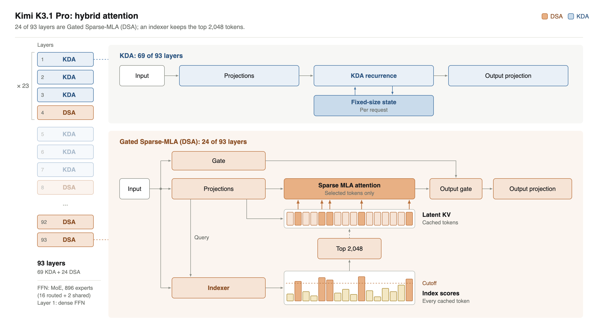
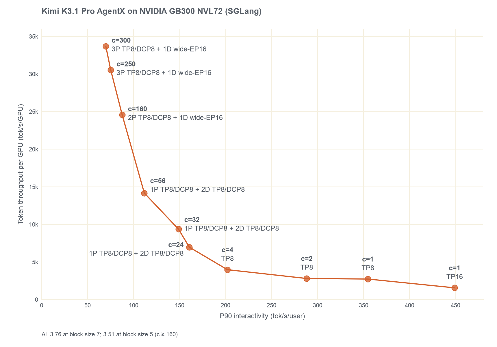
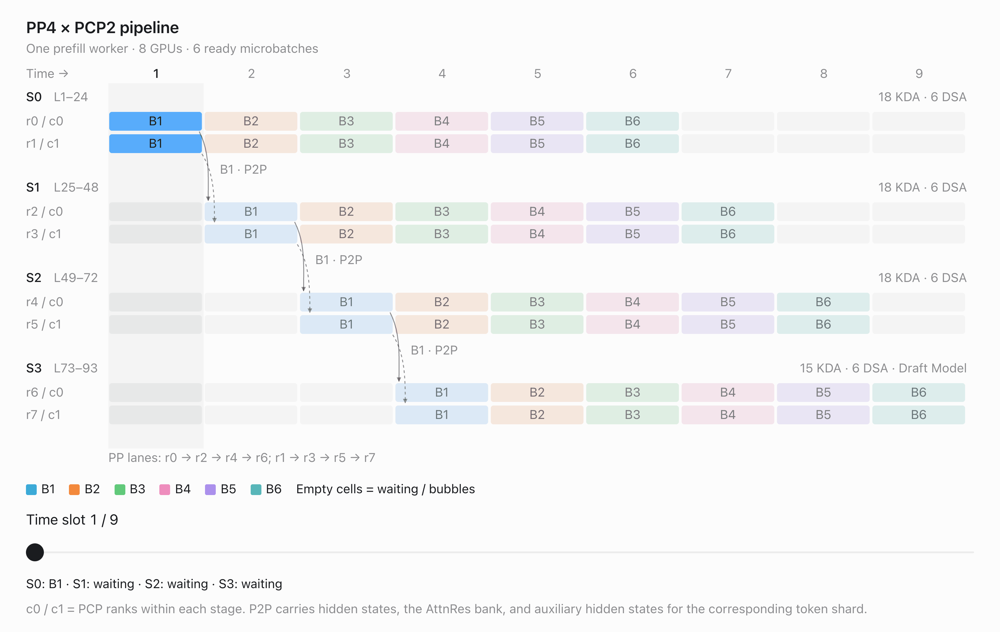
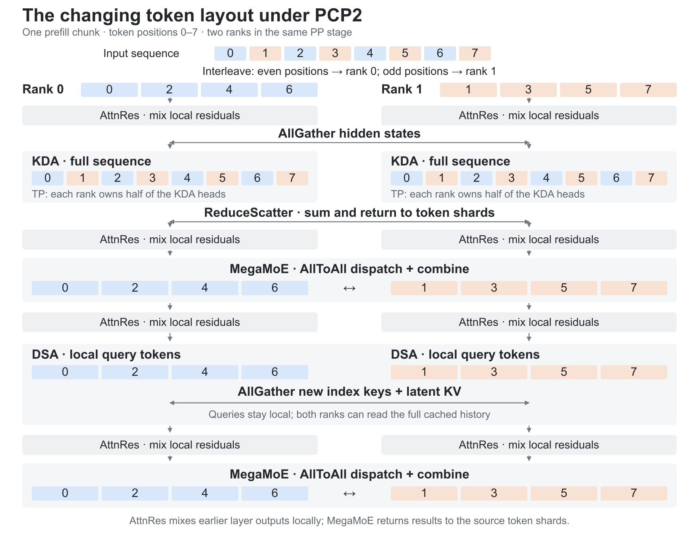
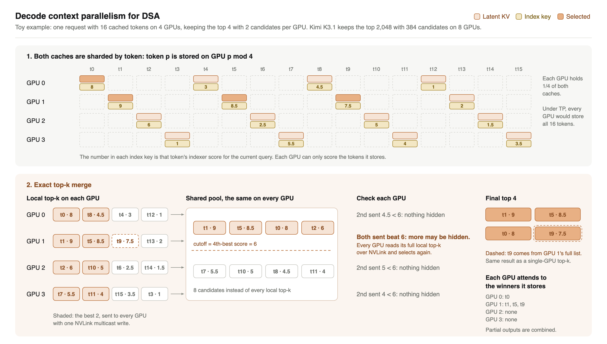
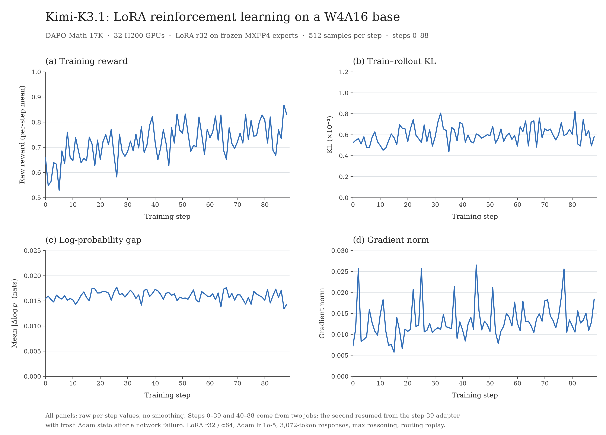
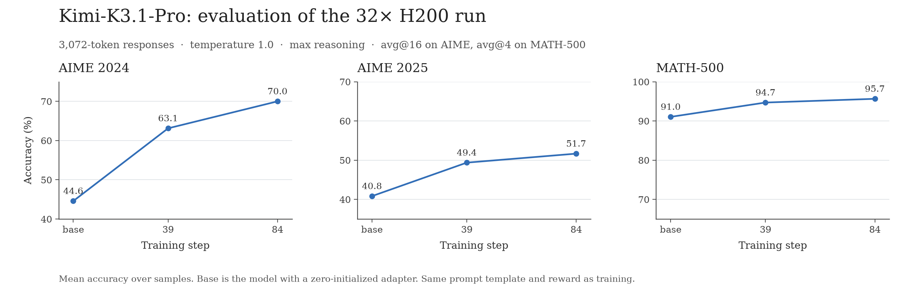
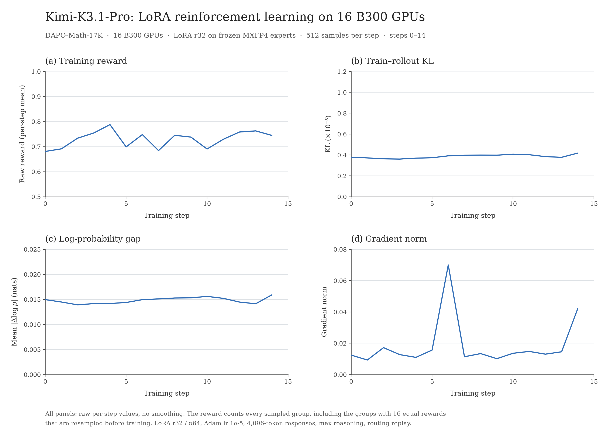

Kimi K3.1 Pro：SGLang 与 Miles 首日支持推理和强化学习
SGLang 与 Miles 从发布首日即支持 Kimi K3.1 Pro 的推理与强化学习（RL）。 Kimi K3.1 Pro 是 Moonshot AI 基于 Kimi K3、通过大规模 RL 后训练得到的开放权重原生多模态智能体模型。SGLang 从首日起即可在 NVIDIA、AMD、Google TPU、AWS Trainium 和真武 PPU 上提供服务。
快速开始
各平台和服务配置的启动命令，请参阅 Kimi K3.1 Pro SGLang Cookbook。
模型概览
2.8 万亿总参数 · 每 token 激活 1040 亿参数 · 100 万 token 上下文 · 支持文本和图像输入
Kimi K3.1 Pro 延续 Kimi K3 架构。模型共有 93 层，包括 69 个 KDA（Kimi Delta Attention）线性注意力层，以及 24 个读取完整历史的注意力层。每个 MoE 层会为每个 token 从 896 个专家中路由 16 个专家，并额外使用 2 个共享专家。
Kimi K3.1 Pro 的新变化
- 稀疏注意力。 24 个全历史层升级为 Gated Sparse-MLA（DSA）层。每层中，小型索引器会为所有历史 token 打分，注意力只读取得分最高的 2,048 个 token，因此长上下文所需的注意力计算大幅减少。

图 1：混合注意力。 KDA 层为每个请求维护固定大小的状态；在每个 DSA 层中，索引器为历史 token 打分，注意力读取排名最高的 2,048 个 token。
SGLang 首日支持
AgentX 性能
我们在 NVIDIA GB300 NVL72 上用 SGLang 运行 Kimi K3.1 Pro（MXFP4），并在 AgentX 上测试了 1～300 个并发会话，使用三类部署布局：
- 1～4 个会话：使用 MegaKernel 的聚合式服务器。 单会话使用 16 张 GPU 上的 TP16，或使用 8 张 GPU 上的 TP8。
- 24～56 个会话：使用 Dynamo 的预填充/解码分离，24 张 GPU 上运行 1P2D。 一个预填充 worker 加两个解码 worker，每个均采用 TP8、DCP8 和 EP2。
- 160～300 个会话：32 或 40 张 GPU 上运行 2P1D 或 3P1D。 两到三个 TP8 · DCP8 · EP2 预填充 worker，为一个 wide-EP16 解码服务器供给请求；后者使用 TP16、attention DP2、DCP8 和 MegaMoE EP16。
DFlash2 在 24～56 个会话、块大小为 7 时的平均接受长度为 3.764；在 160～300 个会话、块大小为 5 时为 3.508。
吞吐量从单会话时每 GPU 1,563 token/s 提升到 300 会话时的 33,688 token/s，而单用户速度则从 449.0 token/s 变化到 69.8 token/s。
分离式部署的启动命令位于 Kimi K3.1 Pro Cookbook。

图 2：NVIDIA GB300 NVL72 上的 AgentX。 每个点代表一种部署，并标注其并发度和并行布局。分离式服务提供最高的每 GPU 吞吐量；聚合式 TP8 和 TP16 服务则提供最快的单用户速度，在并发度 1 时最高达到 449 token/s。
多硬件平台支持
首日支持覆盖 NVIDIA Blackwell、NVIDIA Vera Rubin NVL72、NVIDIA Hopper、AMD Instinct MI350X/MI355X、Google TPU7x、AWS Trainium 2/3，以及真武 PPU M890/810E。当前首日配方使用预览镜像，尚未进入 SGLang 正式发行版；启动方式请参阅 Kimi K3.1 Pro Cookbook。
AMD Instinct MI350X 和 MI355X。 从首日起，一台配备 8 张 MI350X 或 MI355X 的节点即可使用 TP8、DCP8 和 DFlash2 服务 Kimi K3.1 Pro；两台节点可通过 Mooncake 运行 1P1D 预填充/解码分离。新的 gfx950 内核覆盖整个混合模型：KDA 验证使用一个 HIP 内核；DSA 使用合并 DCP 分片的 HIP top-k、HIP sparse MLA 预填充内核，以及从 AITER opus decode 移植的 MXFP8 sparse MLA 解码内核；MoE 使用 A8W4 grouped GEMM。低并发时，sgl-amd-mono 的 MegaKernel 以持久化内核运行解码和验证。
Google TPU。 通过 SGLang-TorchTPU，Kimi K3.1 Pro 可在一个由 16 颗 TPU7x（Ironwood）组成的 slice 上作为 TP32 · EP8 引擎运行。8K 输入的单请求解码速度约为 133 token/s；使用实验性 MegaKernel 和 DFlash 时最高约为 590 token/s。
AWS Trainium。 SGLang 首次为 AWS Trainium 带来开放权重模型的首日支持。Kimi K3.1 Pro 通过 SGLang Trainium 插件运行在 Trainium 2/3 上；该插件基于 AWS 面向 Trainium 的原生 PyTorch 后端 TorchNeuron。插件目前处于有限测试阶段，待广泛开放后将发布 Kimi K3.1 Pro 的 Trainium 配方。如需申请访问权限，可填写此表单。
真武 PPU。 Kimi K3.1 Pro 是真武 PPU 作为 SGLang 树内硬件后端首次获得首日模型支持。M890 和 810E 都支持预填充/解码分离：M890 使用 2P1D，预填充为 TP16/EP16，解码为 TP32/EP32/DP4；810E 使用 1P1D，预填充为 TP16/PP4，解码为 TP32/EP32。
使用 MegaKernel 实现超低延迟
为实现低延迟服务，SGLang 将 Kimi K3.1 Pro 的每个解码和验证步骤运行为与 NVIDIA 联合开发的 MegaKernel。在一个步骤内，前一个内核尚未完全结束时，下一个内核就会启动；GPU 通过 NVLink 交换部分结果并在设备端相互发出信号；all-reduce 被融合进相邻计算内核，因此 GPU 可以逐层推进，无需等待主机。MegaKernel 通过 sgl-nvidia-mega 插件支持 NVIDIA GB300 NVL72 和 NVIDIA Vera Rubin NVL72。使用 --enable-nvidia-megakernel 启动服务器；在 GB300 NVL72 上还可设置 SGLANG_ENABLE_NV_MEGA_RUNTIME_K31_GB_OPTIMIZATION=1 以应用 SGLang 的调优参数。
MegaKernel 覆盖整个步骤：
- 稀疏注意力（DSA）： 对验证块中的每个 token 执行索引器、top-2,048 选择和 sparse MLA 注意力。对于长历史，索引器工作分散到各 GPU，并精确合并选择结果。
- KDA： 处理验证块的线性注意力层，并更新已接受 token 的状态。
- MoE： 包含路由器、16 个路由 MXFP4 专家和共享专家，并将跨 GPU 归约融合到专家内核中。
- 层边界： 注意力输出投影及其 all-reduce、AttnRes 混合均融合到相邻内核。
- DFlash2： 草稿模型从各层到草稿头也作为 MegaKernel 运行；目标模型在自身 MegaKernel 内接受草稿 token，包括采样模式下的接受判断。
在 NVIDIA GB300 NVL72 上，单个 AgentX 会话使用 16 张 GPU 的 TP16 时，P90 单用户解码速度为 449.0 token/s；使用 8 张 GPU 的 TP8 时为 354.7 token/s。
在 NVIDIA Vera Rubin NVL72 上，单个 AgentX 会话使用 16 张 GPU 的 TP16 时，P90 单用户解码速度为 741.8 token/s。
DFlash2 推测解码
SGLang 使用 DFlash2 为 Kimi K3.1 Pro 执行推测解码。小型草稿模型读取 Kimi K3.1 Pro 六个层的隐藏状态，在一次前向传播中提出 7 个 token，随后 Kimi K3.1 Pro 在一次前向传播中检查全部 7 个 token。RadixArk 训练的草稿模型包含五个 MLA 层，滑动窗口为 1,024 token。
并行设计
预填充：流水线并行与预填充上下文并行结合
为了在真实服务中更好地满足首 token 时间（TTFT）要求，我们将流水线并行（PP）与预填充上下文并行（PCP）结合起来。

图 3：PP4 × PCP2 预填充。 每个流水线阶段使用两个 PCP rank 处理同一微批次的 token 分片；不同阶段并发处理不同微批次，最后一个阶段还承载草稿模型。
**流水线并行（PP）**通过将模型层及其 DSA KV 缓存拆分到多个阶段来提高预填充并发度。每个阶段只存储本阶段各层的 KV，从而为更多并发请求留出内存。我们采用为 Kimi K3 引入的分块流水线方法：提示块形成微批次并依次通过各阶段。一个阶段处理某个微批次时，前一阶段会开始处理下一个微批次，以重叠方式缩短整串微批次的处理时间。
**预填充上下文并行（PCP）**以轮询方式将 token 位置交错分布到不同 rank，让每个 rank 持有序列的一个分片。KDA 会收集完整数据块，在各 rank 间拆分注意力头，再把输出归约回 token 分片。DSA 保持 query 在本地，同时收集新的 key 和 KV，以访问完整历史。AttnRes 在本地分片上工作，MegaMoE 则通过 AllToAll 将 token 路由到专家并返回结果。

图 4：PP 阶段内的 token 布局。 KDA 在不同 rank 间拆分注意力头并收集完整序列；AttnRes 在本地 token 分片上工作；每个注意力层之后，MegaMoE 将专家结果返回这些分片。
PP 和 PCP 都可与 HiCache 配合使用，后者将可复用前缀保存在主机内存和外部存储中。当前 PCP 会拆分计算，但 DSA KV 在 CP 组内仍会复制。后续计划为 PCP 增加 KV 缓存分片，消除 CP rank 间的重复 KV 存储。
预填充 worker 也支持解码上下文并行（DCP），它更适合 AgentX 一类工作负载：请求经常在很长的缓存历史后仅追加少量新文本，而且并不只关注 TTFT。每个 DSA 层中，启用 DCP 的预填充 worker 会通过 AllGather 重建该批次的完整 KV 缓存历史，再调用注意力内核。由于 DSA 层少于 KDA 层，这项通信开销在现代 NVLink 系统上可以接受。
解码：结合 DSA 与解码上下文并行
使用 DSA 后，每个 query 只查看先前得分最高的 2,048 个 token，但 KV 缓存和索引缓存仍会随上下文长度增长。我们的 DCP 实现以相同方式在 GPU 间拆分两类缓存：token p 存储在编号为 p mod 8 的 GPU 上，因此每张 GPU 只持有各缓存的八分之一。
由于索引缓存被分片，每张 GPU 的索引器只能为本地 token 打分，随后选择本地 top 2,048。此步骤不会丢失任何 token：全局 top 2,048 中的每个 token，也必然位于其所属 GPU 的本地 top 2,048 中。为低成本完成合并，每张 GPU 仅通过一次 NVLink multicast write，把最优的 384 个候选发送给其他 GPU。此时每张 GPU 都拥有相同的 8 × 384 个候选，并以其中第 2,048 高的分数作为阈值。如果某张 GPU 的第 384 个候选低于阈值，则它不可能隐藏其他胜出者；如果它的 384 个候选全都高于阈值，则可能仍有遗漏，因此所有 GPU 会通过 NVLink 直接读取它完整的本地 top 2,048，再执行一次选择。最终结果与单 GPU top-k 完全一致，无需新一轮通信。之后，每张 GPU 只关注由自己持有的胜出 token，再合并局部输出。

图 5：玩具示例中的 DSA DCP。 两类缓存都按 token 分片。每张 GPU 只共享最优候选；如果某张 GPU 可能仍持有更多胜出者，则读取其完整列表，因此合并后的 top-k 与单 GPU top-k 一致。
Miles 首日支持
Miles 从发布首日起即可在 32 张 H200 组成的小型集群上对 Kimi K3.1 Pro 进行强化学习训练。
训练配方。 与 Kimi K3 相同，Miles 在冻结的 MXFP4 基础模型上训练 BF16 LoRA 适配器。无论在训练器还是 SGLang 中，适配器都作为独立的 BF16 项存在，绝不会合并进基础模型。
训练并行。
- 训练器结合 PP、TP、CP 和 EP。
- CP 也覆盖新的 DSA 层：每张 GPU 保留自己的 query，并从 CP 组中收集 latent KV 和索引器 key。
用于 LoRA rollout 的 DP attention。 使用 TP32 attention 时，每张 GPU 为所有运行中请求处理一部分注意力头。MLA 为每个 token 只保留一份压缩 KV，而不是每个头一份，因此张量并行无法拆分它：32 张 GPU 都会存储相同的 MLA KV 和索引器 key，并且每个注意力层结束时都要跨四个节点执行 all-reduce。使用 DP attention 后，32 张 GPU 组成四个 8-GPU 组，每组对应一个节点，并只为自身四分之一的请求执行注意力；MoE 层仍横跨全部 32 张 GPU。这带来两个变化：
- 更少的重复 KV。 每张 GPU 存储 64 个请求的 KV，而不是 256 个。总 token 数同为 589,824 时，每 GPU KV 缓存占用从 16.9 GiB 降至 4.2 GiB。
- 更少的跨节点流量。 注意力 all-reduce 留在单个节点的 NVLink 内，只有 MoE 层仍需跨节点交换 token。
在 32 张 H200、256 个运行请求下，一个解码步骤耗时 166.6 ms，而 TP32 attention 为 202.6 ms。运行请求为 64 时，DP attention 反而更慢（136 ms 对 110.5 ms），因此只有 rollout 能持续填满引擎时才更划算。
为了支持 LoRA，SGLang 现在允许 DP attention 下的 attention TP 大于 1。LoRA 层必须知道输入行属于本组请求，还是已经收集了所有组的请求。在 Kimi K3.1 Pro 中，注意力投影看到本组的行，而稠密层、共享专家和路由专家会看到全部行。模型会声明这种布局，因此 SGLang 不再要求 attention TP 必须为 1。
一致性。 Rollout 路由重放会让训练器为每个 token 使用 SGLang 选择的专家。在 DP attention 下，一个组内的 GPU 共享同一份索引器选择，因此读取相同的 2,048 个 token。每一步都会在相同策略版本下记录训练/rollout KL。
验证运行。 训练使用 DAPO-Math-17k 提示；每步包含 32 个提示，每个提示采样 16 次；LoRA 秩为 32，学习率为 1e-5。任务要求模型在固定的 3,072-token 预算内完成推理并给出答案。
| 配置 | 32× H200 | 16× NVIDIA Blackwell Ultra |
|---|---|---|
| 训练器 | PP4 × TP4 × CP2，EP8 | PP2 × TP4 × CP2，EP8 |
| Rollout | MoE EP32，attention DP4 × TP8 | MoE EP16，attention DP2 × TP8 |
| 训练/rollout KL | 0.44～0.82 × 10⁻³ | 0.36～0.42 × 10⁻³ |

图 6：训练曲线。 奖励从最初 10 步的 0.63 上升到最后 10 步的 0.77；训练/rollout KL、log-prob 差值和梯度范数均保持平稳。
我们采用训练时相同的预算、提示模板和奖励进行评测，温度设为 1.0：每道 AIME 题采样 16 次，每道 MATH-500 题采样 4 次。训练 84 步后，AIME 2024 准确率从 44.6 提升到 70.0。

图 7：RL 前后的准确率。 展示基础模型以及训练 39 步和 84 步后的适配器，在多次采样上的平均准确率。
Blackwell。 同一配方也可在 16 张 NVIDIA Blackwell Ultra GPU 上运行，GPU 数量只有 H200 实验的一半，并使用上表所示布局。一次包含 4,096-token 响应的 15 步运行验证了 Blackwell 上训练与 rollout 始终保持一致，更多实验仍在进行中。

图 8：16 张 NVIDIA Blackwell Ultra 上的训练曲线。 全部 15 步中，训练/rollout KL 和 log-prob 差值均保持平稳；此次运行太短，尚不足以展示奖励趋势。
致谢
Kimi K3.1 Pro 首日支持由 SGLang 与 Miles 团队、Moonshot AI 团队共同完成，并得到了 AMD（Zijie Chen、Wun-guo Huang、Xinyi Song、Zhaoyi Li、Hai Xiao，以及 Berkeley SkyDiscover 的 SkyOpt agents）、AWS 和真武 PPU 的参与。我们也感谢 NVIDIA 提供的支持。
本文由 Codex 根据 SGLang 官方英文原文翻译。